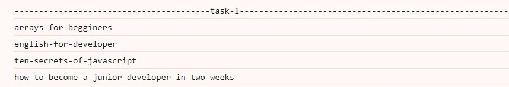
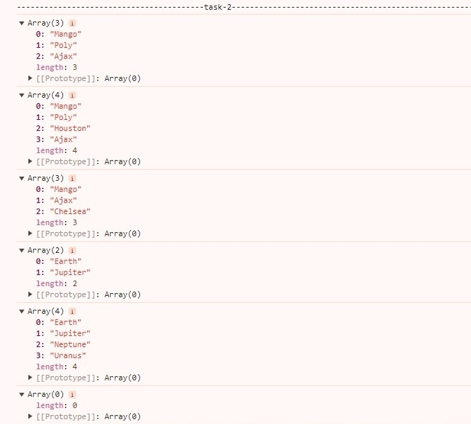
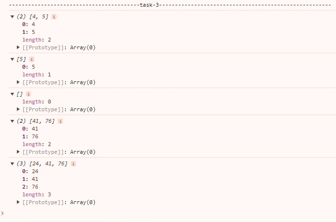

Задача 1. Генератор slug
Напиши функцію slugify(title), яка приймає заголовок статті,
параметр title і повертає slug, створений із цього рядка.
Значенням параметра title будуть рядки, слова яких розділені лише пробілами.
Усі символи slug повинні бути в нижньому регістрі.
Усі слова slug повинні бути розділені тире.
Візьми код нижче і встав після оголошення своєї функції для перевірки
коректності її роботи. У консоль будуть виведені
результати її роботи.
Залиш цей код для перевірки ментором.
console.log(slugify("Arrays for begginers")); // "arrays-for-begginers"
console.log(slugify("English for developer")); // "english-for-developer"
console.log(slugify("Ten secrets of JavaScript")); // "ten-secrets-of-javascript"
console.log(slugify("How to become a JUNIOR developer in TWO WEEKS")); //
"how-to-become-a-junior-developer-in-two-weeks"
Розв'язок:
function slugify(title) {
const slug = title.toLowerCase().split(" ").join("-");
return slug;
}
console.log(slugify("Arrays for begginers")); // "arrays-for-begginers"
console.log(slugify("English for developer")); // "english-for-developer"
console.log(slugify("Ten secrets of JavaScript")); // "ten-secrets-of-javascript"
console.log(slugify("How to become a JUNIOR developer in TWO WEEKS")); //
"how-to-become-a-junior-developer-in-two-weeks"
Результат:

Задача 2. Композиція масивів
Напиши функцію під назвою makeArray, яка приймає три параметри:
firstArray (масив), secondArray (масив) і maxLength
(число). Функція повинна створювати новий масив, який містить усі
елементи з firstArray, а потім усі елементи з
secondArray.
Якщо кількість елементів у новому масиві перевищує maxLength,
функція повинна повернути копію масиву з довжиною
maxLength елементів.
В іншому випадку функція повинна повернути весь новий масив.
Візьми код нижче і встав після оголошення своєї функції для перевірки
коректності її роботи. У консоль будуть виведені
результати її роботи.
console.log(makeArray(["Mango", "Poly"], ["Ajax", "Chelsea"], 3));
// ["Mango", "Poly", "Ajax"]
console.log(makeArray(["Mango", "Poly", "Houston"], ["Ajax", "Chelsea"], 4));
// ["Mango", "Poly", "Houston", "Ajax"]
console.log(makeArray(["Mango"], ["Ajax", "Chelsea", "Poly", "Houston"], 3));
// ["Mango", "Ajax", "Chelsea"]
console.log(makeArray(["Earth", "Jupiter"], ["Neptune", "Uranus"], 2));
// ["Earth", "Jupiter"]
console.log(makeArray(["Earth", "Jupiter"], ["Neptune", "Uranus"], 4));
// ["Earth", "Jupiter", "Neptune", "Uranus"]
console.log(makeArray(["Earth", "Jupiter"], ["Neptune", "Uranus", "Venus"], 0)); // []
Залиш цей код для перевірки ментором.
Розв'язок:
function makeArray(firstArray, secondArray, maxLength) {
const newArray = firstArray.concat(secondArray);
if (newArray.length > maxLength) {
return newArray.slice(0, maxLength);
} else {
return newArray;
}
}
console.log(makeArray(["Mango", "Poly"], ["Ajax", "Chelsea"], 3));
// ["Mango", "Poly", "Ajax"]
console.log(makeArray(["Mango", "Poly", "Houston"], ["Ajax", "Chelsea"], 4));
// ["Mango", "Poly", "Houston", "Ajax"]
console.log(makeArray(["Mango"], ["Ajax", "Chelsea", "Poly", "Houston"], 3));
// ["Mango", "Ajax", "Chelsea"]
console.log(makeArray(["Earth", "Jupiter"], ["Neptune", "Uranus"], 2));
// ["Earth", "Jupiter"]
console.log(makeArray(["Earth", "Jupiter"], ["Neptune", "Uranus"], 4));
// ["Earth", "Jupiter", "Neptune", "Uranus"]
console.log(makeArray(["Earth", "Jupiter"], ["Neptune", "Uranus", "Venus"], 0)); // []
Результат:

Задача 3. Фільтрація масиву чисел
Напиши функцію filterArray(numbers, value), яка приймає
масив чисел (numbers) та значення (value) як параметри. Функція
повинна повертати новий масив лише тих чисел із масиву numbers,
які більші за значення value.
Усередині функції:
Створи порожній масив, у який будеш додавати підходящі числа.
Використай цикл для ітерації кожного елемента масиву numbers.
Використовуй умовний оператор if усередині циклу для перевірки кожного
елемента и додавання до свого масиву.
Поверни свій новий масив з підходящими числами як результат.
Візьми код нижче і встав після оголошення своєї функції для перевірки
коректності її роботи. У консоль будуть виведені
результати її роботи.
console.log(filterArray([1, 2, 3, 4, 5], 3)); // [4, 5]
console.log(filterArray([1, 2, 3, 4, 5], 4)); // [5]
console.log(filterArray([1, 2, 3, 4, 5], 5)); // []
console.log(filterArray([12, 24, 8, 41, 76], 38)); // [41, 76]
console.log(filterArray([12, 24, 8, 41, 76], 20)); // [24, 41, 76]
Залиш цей код для перевірки ментором.
Розв'язок:
function filterArray(numbers, value){
let myArray = [];
for (let i = 0; i < numbers.length; i++){
if (numbers[i]> value) {
myArray.push(numbers[i]);
}
}
return myArray
}
console.log(filterArray([1, 2, 3, 4, 5], 3)); // [4, 5]
console.log(filterArray([1, 2, 3, 4, 5], 4)); // [5]
console.log(filterArray([1, 2, 3, 4, 5], 5)); // []
console.log(filterArray([12, 24, 8, 41, 76], 38)); // [41, 76]
console.log(filterArray([12, 24, 8, 41, 76], 20)); // [24, 41, 76]
Результат:
